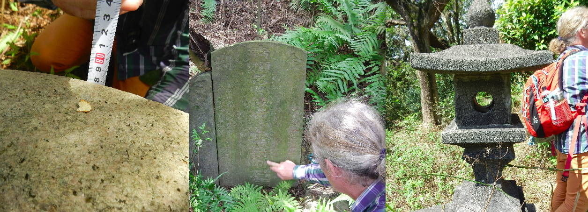

奧利華 副教授
Assoc. Prof. Oliver STREITER

2019-2025 中心主任 Center Director
國立高雄大學西洋語文學系專任教師
Dept. Western Languages & Literature, National University of Kaohsiung
ThakBong Project 讀墓計劃主持人
Publications
In this paper we approach the paradigmatic changes in the
inscriptions of Taiwan’s tombstones not as phenomenon that can be traced
on maps and timelines, but as phenomena that occurred in the history
of individual families. For this purpose, tombstones are connected into
networks of family relations, created through references from different
tombstones to a common set of person. Using the edges of these tombstone
networks in a chronological order, we obtain a workable data structure
to follow transformations in a family line. The unexpected problems we
encoutered with this research approach, i.e. the only regional references
to mourners by names and the reduction of workable data with each
processing step are discussed and possible solutions are suggested.
Online PDF
BibTex Entry